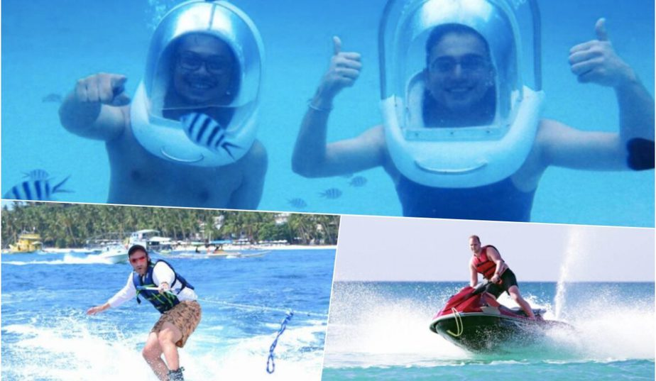
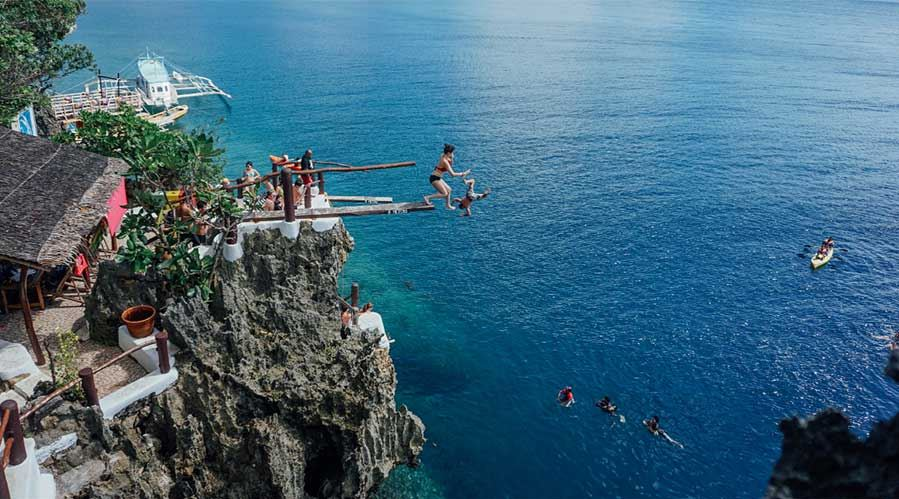
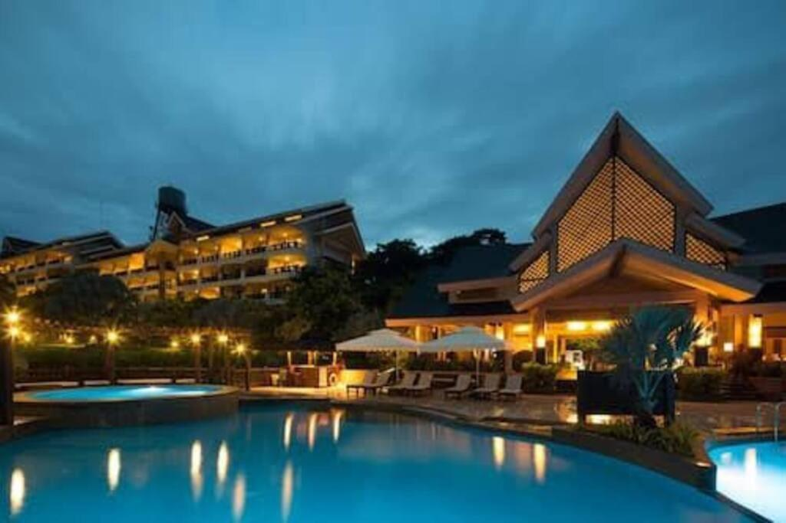
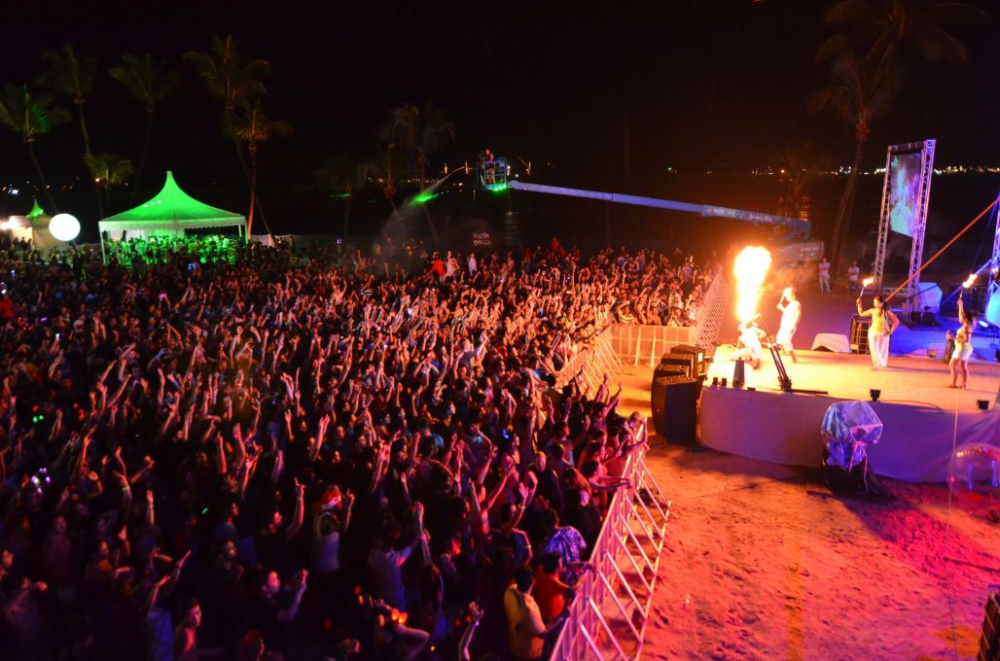

Boracay offers an array of exciting activities that cater to all types of travelers. Whether you're an adrenaline junkie or seeking a more laid-back experience, there's something for everyone on this beautiful island.
Water Sports

Boracay's pristine waters make it a paradise for water sports enthusiasts. Some of the most popular water activities include:
- Snorkeling: Explore the vibrant underwater world teeming with marine life at various snorkeling spots around the island.
- Scuba Diving: Dive into the crystal-clear depths and discover colorful coral reefs and marine creatures.
- Kiteboarding: With steady winds and vast open waters, Boracay is a kiteboarder's dream destination.
- Parasailing: Soar high above the sea and enjoy breathtaking views of the island while being towed by a boat.
- Jet Skiing: Feel the thrill of speed as you jet across the waves on a jet ski.
Island Adventures

For those seeking land-based adventures, Boracay has plenty to offer as well:
- ATV Tours: Take an exhilarating ATV ride through scenic off-road trails and lush landscapes.
- Hiking: Embark on a trek to Mount Luho, the highest point on the island, and enjoy panoramic views.
- Island Hopping: Explore nearby islets and coves on a relaxing island hopping tour.
Relaxation and Wellness

If relaxation is what you seek, Boracay's serene beaches and luxury spas have got you covered:
- Beach Lounging: Unwind on the soft white sands of White Beach and soak up the tropical sun.
- Spa Treatments: Indulge in a soothing spa experience with a variety of massages and treatments available.
- Yoga and Meditation: Join yoga classes held on the beach to find inner peace and balance.
Nightlife

When the sun sets, Boracay comes alive with its vibrant nightlife:
- Beach Parties: Dance the night away at beachfront bars and clubs with live music and DJs.
- Fire Dancing: Witness thrilling fire dancing performances along the beach.
- Night Markets: Explore the night markets for souvenirs, local handicrafts, and delicious street food.
No matter your interests, Boracay has an activity to make your vacation unforgettable. Whether you're seeking adventure, relaxation, or a mix of both, this tropical paradise has it all.